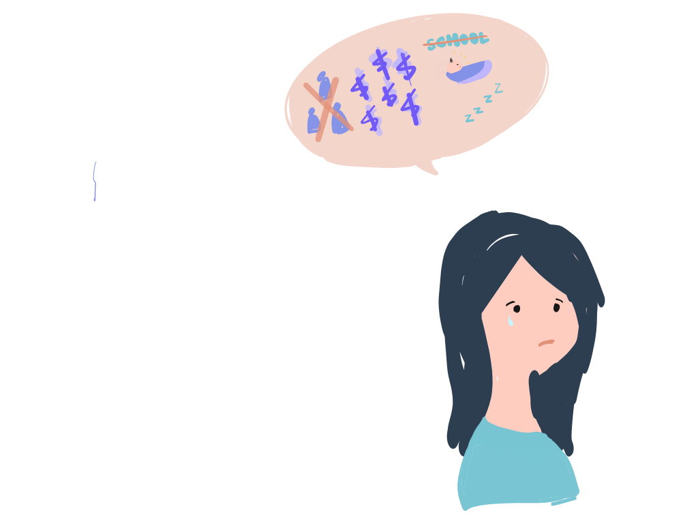

Sittery
Sittery is an online childcare education platform which help babysitters develop valuable skills to raise their standard of living. .
My Team
Hui Ye, Chuqing Shao
Timeline
2017
My Role
User Research, Medium-fidelity
Tools
2019

background
How Pebbles help teen parents
Pebbles alleviate the challenges of being a young parent and a teenager through the support of mentors, access to basic resources, and scheduling changes with their partner. I worked with three teammates to discover problems, research and brainstorming sessions. I worked on the design and further iterations of the project.
Problem #2
Teen parents are often isolated from their community.
Teen moms often get kicked out of their homes, but they’re not allowed to stay in homeless shelters because it’s “a child with a child.” It leads to this question: What if I don't have a case manager? What happens? Who do I reach out for help?.
Problem #3
Conflicting schedules occur while co-parenting.
Co-parenting after a separation can create tension to the relationship. From our research, we found out that teen mothers feel it is important to have her children's father present in raising the child, despite being separated. It leads to this question: What if I don't have a case manager? What happens? Who do I reach out for help?.
Problem #3
Conflicting schedules occur while co-parenting.
Co-parenting after a separation can create tension to the relationship. From our research, we found out that teen mothers feel it is important to have her children's father present in raising the child, despite being separated. It leads to this question: What if I don't have a case manager? What happens? Who do I reach out for help?.
SECONDARY RESEARCH
Competitor Analysis
Pebbles alleviate the challenges of being a young parent and a teenager through the support of mentors, access to basic resources, and scheduling changes with their partner. I worked with three teammates to discover problems, research and brainstorming sessions. I worked on the design and further iterations of the project.
Positioning Matrix
Pebbles alleviate the challenges of being a young parent and a teenager through the support of mentors, access to basic resources, and scheduling changes with their partner. I worked with three teammates to discover problems, research and brainstorming sessions. I worked on the design and further iterations of the project.
User Research
Formulating assumptions
Through affinity mapping, we assumed young parents have different levels of support and different levels of knowledge. A young parent's knowledge is based on the knowledge they received. Creating segmentations of our users allowed us to create patterns of similar behaviors.
01
Young parents are unable to stay competitive in the workforce, as sustaining jobs require post-secondary education.
02
What if we can provide a platform for users to connect with like-minded individuals who have similar interests and have gone to the places we want to go to? Wouldn't it eradicate the time to plan?
03
What is the incentive of posting on your travel itinerary in this platform?
Affinity Diagram
Through affinity mapping, we assumed young parents have different levels of support and different levels of knowledge. A young parent's knowledge is based on the knowledge they received. Creating segmentations of our users allowed us to create patterns of similar behaviors.
Focus Groups
To test some of our assumptions we had as a team, we met with....We knew if we truly wanted to understand our young parents we needed to meet them, talk to them and spend time with them. We interviewed 4 participants in-person.

User Interviews
To understand how students use the current MyBYUI portal, the UX researcher and I conducted guerilla user interviews with 22 students. During the interviews, I asked questions like "Tell me about your experience using the MyBYUI portal", "What are important tasks you perform on MyBYUI?", "If MyBYUI could streamline any information to you, what would that information be?", and "What are needs you have as a student that MyBYUI is not fulfilling?"
Here are some key insights we found:
Young parents wants to break the stereotype that is imposed on them.
Young parents are always juggling between providing for their children and their education.
Young parents prioritize their child's future over their own personal growth.
Young parents have to adjust to parenting life asap.
Young parents keep social media lives private.
Key Quotes
“How did it happen, how did you do it? How are you doing now?" -- I would have wanted to be asked "How did you overcome it?"
"I don't want to be another statistic."
“Financially, it was really hard because I had to make tough decisions between buying diapers and buying a book for a specific class.”
Persona
After collecting insights from the user interviews, our team created two personas. The first persona is focused on a upper-class student who needs to save time and be aware of important deadlines. The second persona is focused on a freshman student who is looking for rescources that the campus provides.
Storyboards
Storyboards help us visualize scenarios the user is engaged in, the problems faced and helps us understand how our solution will help the user have a better experience.
ideation
Initial Sketches
Site Map
We want to identify the user's thought and action process while interacting with the app.
Wireframe
Laying out information hierarchy and framework of the app.After collecting insights from the user interviews, our team created two personas. The first persona is focused on a upper-class student who needs to save time and be aware of important deadlines. The second persona is focused on a freshman student who is looking for rescources that the campus provides.
VISUAL
Moodboard
Design Principles
Visual Identity System
Icons
USER TESTING
Card Sorting Exercise (OPEN)
After collecting insights from the user interviews, our team created two personas. The first persona is focused on a upper-class student who needs to save time and be aware of important deadlines. The second persona is focused on a freshman student who is looking for rescources that the campus provides.
Reconstructing Information Architecture
After collecting insights from the user interviews, our team created two personas. The first persona is focused on a upper-class student who needs to save time and be aware of important deadlines. The second persona is focused on a freshman student who is looking for rescources that the campus provides.
Iteration I
FINAL SCREENS
Close-up pictures
Room for improvements
After collecting insights from the user interviews, our team created two personas. The first persona is focused on a upper-class student who needs to save time and be aware of important deadlines. The second persona is focused on a freshman student who is looking for rescources that the campus provides.